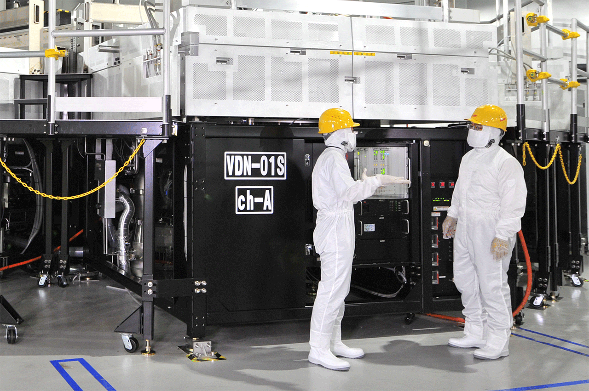

「液晶王国」転落、正念場のシャープ
経営危機に陥ったシャープは23日、定時株主総会を大阪市で開いた。総額2250億円の優先株発行や資本金を５億円に減らす大幅減資など、すべての議案を可決した。これらの施策で累積損失を一掃できるが、借入金を一部減らせても財務の不安はつきまとう。
一時は世界の液晶テレビの半分を販売する「液晶王国」を築き上げた。強みとする液晶パネルを独自開発し、自社製品に活用。商品とデバイスを融合させる「スパイラル戦略」と呼ぶ経営で、ブランド力向上や技術革新をうまく進めてきた。
その後、リーマン・ショックを経て市場環境は激変した。電機各社は利益が出ない事業から手を引く「選択と集中」に踏みだし業績回復を果たした。一方、シャープは液晶産業をつくった自負が強すぎ、もうからない看板事業にしがみついた。結果として、慢性的な赤字体質から抜けきれない。電機大手の財務指標と比較しながら、追い詰められたシャープの姿を照らし出す。
電機大手は「選択と集中」で成長の手がかり
電機大手８社の経営指標を比較すると劣勢を強いられるシャープの姿が浮かびあがる。財務の健全性を示す自己資本比率。シャープは2014年度（2015年３月期末）が1.5％と著しく低い。最終損益は2223億円の赤字（13年度は115億円の黒字）。設備の減損処理、原材料の価格下落を受けた評価損など一過性の要因があるものの、15年度も引き続き1000億円超の最終赤字になるもよう。
株式の時価総額は８社のなかでシャープが最下位。足元の水準をリーマン・ショック後の09年３月末と比べると日立製作所は4倍、ソニーは2倍、各社とも1.5～4.0倍になった。
「ニッポン電機」はリーマン・ショック後から続いた構造改革に区切りをつけて、それぞれが成長への道筋を示しつつある。日立、パナソニックはシャープを上回る大幅赤字を経験した。ただ、日立は社会インフラ、パナソニックは自動車、住宅関連へと「ＢtoＢ」路線を明確にし、安定した収益を出せる体質に変わろうとする。ソニーはデバイス、映画、音楽事業が堅調なうえ、不振だったテレビ事業に復調の兆しがある。
シャープは10月からカンパニー制を導入する。液晶事業を「ディスプレイデバイス」、家電・通信などを「コンシューマーエレクトロニクス」など５つのカンパニーに移す。意思決定を迅速にし、一段のリストラを含めて思い切った立て直しにつなげる考え。
資本支援で欠損金一掃、自己資本に厚み
- 売上高
- 営業損益
- 株価
| 2001年 |
|
|---|---|
| 2004年 |
|
| 2006年 |
|
| 2007年 |
|
| 2008年 |
|
| 2009年 |
|
|---|---|
| 2012年 |
|
| 2013年 |
|
|---|---|
| 2014年 |
|
| 2015年 |
|
シャープの財務状況は瀬戸際に追い込まれ、主力行から資本支援を受ける。リーマン・ショックの08年度からの７年間のうち４年が赤字。損失が積み重なり自己資本は毀損した。自己資本は07年度に１兆2000億円を超えたが、14年度末に301億円まで落ち込んだ。
「液晶王国」の大黒柱である亀山工場（三重県亀山市）、堺工場（堺市）への過去の積極投資が重くのしかかった。工場の稼働率がいったん下がれば在庫が膨らみ、それでも運転資金を確保するため借入金を膨らませた。好業績期に攻め一辺倒になってしまい、資産効率を改善しなかったツケがたたっている。
これまで主要銀行による協調融資や公募増資、国内外メーカーとの資本業務提携でなんとか乗り切ってきた。今回も資金繰りが苦しくなったうえでの資本増強だが、依然として高水準の有利子負債は消えないままだ。
液晶頼み抜け出せず、再生には次の一手
- 全体売上高
- 液晶部門売上高
- 液晶パネル価格
シャープは再建できるか。主力の液晶事業の動きが良くも悪くも方向づける。14年度の液晶パネル事業の売上高は7729億円で、連結売上高の28％を占める会社の顔であり、収益の屋台骨に違いない。もっとも市況変動にさらされやすく業績の浮き沈みだけでなく、経営の命運さえ握る。
それだけに、採算性が悪い大型液晶パネルからスマートフォン（スマホ）向け中小型パネルにシフトするなど手立てを講じてきた。中小型液晶パネルは中国スマホ向けメーカー向けを開拓しけん引役だったはずが、競争激化によってライバルに顧客を奪われた。
液晶ビジネスは資本集約型事業の最たる例で、巨額投資を続けられなければ勝ち残れない。シャープも設備投資の大半を振り向けてきたが、資金繰りにもがくなかで、攻めの資金投下は遠ざかる。液晶を中核にした成長シナリオは一筋縄でいかず、事業売却などの選択を迫られる可能性がある。

亀山第２工場（三重県亀山市）は中小型液晶の生産比率を17年度に約８割に引き上げる
不退転の覚悟、もはや聖域はない
金融支援を受けても、ひとまずの資金繰りに一息ついたにすぎない。不採算事業の縮小・撤退、工場閉鎖などの痛みを伴う改革は手つかずなままだ。経営再建は本業で稼ぐ力を押し上げられるかにかかる。ただ、シャープが描く再建計画では液晶頼みのイメージをぬぐえない。液晶ビジネスが再び大赤字を出してしまえば、八方ふさがりとなり存続すら危うくなる。「不退転の覚悟」「もはや聖域はない」（高橋興三社長）。信頼を取り戻すためにも甘えは許されない。
- 取材・制作
- 森園 泰寛 清水 明 安田 翔平 山崎 亮
- データ出典
- 各社決算資料